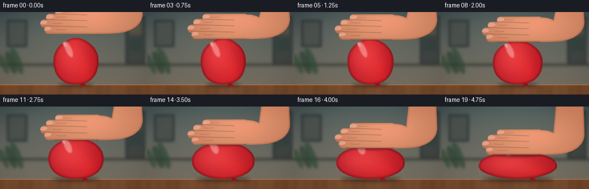
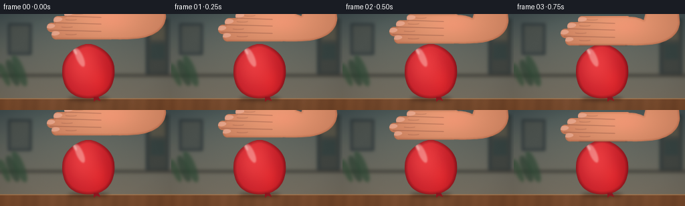

CODING AGENTS AS PIXEL WORLD MODELS
traex/GPT-5.6-Sol · phygen_013
点击播放 · 原生 RGB 像素
逐轮保存的候选
回放视频、检查图与代码变化。
每份候选均可单独播放。实际图片检查记录在下方工具轨迹中。
候选 01播放与检查图
点击播放 · 原生 RGB 像素


展开代码变化
--- 上一保存版本 +++ 本次保存版本 @@ -0,0 +1,274 @@ +#!/usr/bin/env python3 +"""Procedurally render a short, text-to-video shot of a hand compressing a balloon.""" +from pathlib import Path +import json, math +import numpy as np +import cv2 +from PIL import Image, ImageDraw, ImageFont +import artifact_io + +ROOT = Path(__file__).resolve().parent +SPEC = json.loads((ROOT / "task_spec.json").read_text()) +W, H = SPEC["width"], SPEC["height"] +N = SPEC["frames"] +S = 4 # supersampling for smooth photographic edges +w, h = W*S, H*S +rng = np.random.default_rng(13013) + + +def scpts(points): + return np.rint(np.asarray(points, np.float32)*S).astype(np.int32) + + +def bezier(p0, p1, p2, p3, steps=18): + t = np.linspace(0, 1, steps, endpoint=False)[:, None] + a = np.asarray(p0); b = np.asarray(p1); c = np.asarray(p2); d = np.asarray(p3) + return (1-t)**3*a + 3*(1-t)**2*t*b + 3*(1-t)*t**2*c + t**3*d + + +def poly_mask(points): + m = np.zeros((h,w), np.uint8) + cv2.fillPoly(m, [scpts(points)], 255, lineType=cv2.LINE_AA) + return m + + +def over(dst, src, alpha): + a = (alpha.astype(np.float32)/255.0)[...,None] + return np.clip(dst*(1-a)+src*a, 0, 255) + + +def blurred_ellipse(canvas, center, axes, color, blur, opacity=1.0): + m=np.zeros((h,w),np.uint8) + cv2.ellipse(m,(int(center[0]*S),int(center[1]*S)),(int(axes[0]*S),int(axes[1]*S)),0,0,360,255,-1,cv2.LINE_AA) + if blur: m=cv2.GaussianBlur(m,(0,0),blur*S) + layer=np.empty_like(canvas); layer[:]=color + return over(canvas,layer,np.clip(m.astype(float)*opacity,0,255).astype(np.uint8)) + + +def make_background(frame_idx): + yy,xx=np.mgrid[0:h,0:w] + # cool studio wall, with warm light gently drifting as a time-lapse cue + drift = 3.5*frame_idx/(N-1) + top=np.array([57,69,73.],float)+drift + bot=np.array([110,103,91.],float)+drift*.6 + q=np.minimum(yy/(128*S),1)[...,None] + im=top*(1-q)+bot*q + # broad window illumination from upper left + glow=np.exp(-(((xx-125*S)/(150*S))**2+((yy-34*S)/(82*S))**2)) + im += glow[...,None]*np.array([24,24,18.]) + + # out-of-focus wall features, intentionally subdued + def rect(x0,y0,x1,y1,c): + cv2.rectangle(im,(x0*S,y0*S),(x1*S,y1*S),c,-1) + rect(12,14,47,61,(45,54,57)); rect(15,17,44,58,(76,82,78)) + rect(218,7,252,90,(48,57,58)); rect(222,11,249,88,(65,69,65)) + rect(225,17,246,39,(87,84,72)); rect(225,45,246,68,(54,66,64)) + # soft horizontal shelf + cv2.rectangle(im,(0,90*S),(w,94*S),(66,65,59),-1) + im=cv2.GaussianBlur(im.astype(np.float32),(0,0),2.6*S) + + # plant-like bokeh shapes at far left + for cx,cy,ax,ay,col in [(19,88,7,21,(41,64,48)),(29,85,7,25,(44,72,52)),(7,91,5,18,(49,76,54))]: + mm=np.zeros((h,w),np.uint8); cv2.ellipse(mm,(cx*S,cy*S),(ax*S,ay*S),-22,0,360,170,-1) + mm=cv2.GaussianBlur(mm,(0,0),2.4*S) + lay=np.empty_like(im); lay[:]=col; im=over(im,lay,mm) + # tabletop + table_y=127*S + wood=np.empty_like(im) + base=np.array([117,75,48.]) + wood[:]=base + grain=(4*np.sin(xx/(10.0*S)+0.25*np.sin(xx/(37*S))) + 2*np.sin(xx/(2.7*S)+yy/(35*S))) + wood += grain[...,None]*np.array([1.0,.7,.45]) + im[table_y:]=wood[table_y:] + cv2.line(im,(0,table_y),(w,table_y),(170,123,82),S) + # subtle foreground vignette + rad=((xx-w*.5)/(w*.71))**2+((yy-h*.48)/(h*.76))**2 + im-=np.maximum(rad-.35,0)[...,None]*14 + return np.clip(im,0,255) + + +def balloon_contour(p, cx=132.0): + top=45+38*p + bottom=126.2 + rh=bottom-top + rx=39+29*p + contact=2.2+30*p + pts=[] + tl=(cx-contact,top); lm=(cx-rx,top+.49*rh); b=(cx,bottom) + rm=(cx+rx,top+.49*rh); tr=(cx+contact,top) + pts.extend(bezier(tl,(cx-contact-9-5*p,top+.5),(cx-rx,top+.15*rh),lm,24)) + pts.extend(bezier(lm,(cx-rx,bottom-11),(cx-.55*rx,bottom),b,24)) + pts.extend(bezier(b,(cx+.55*rx,bottom),(cx+rx,bottom-11),rm,24)) + pts.extend(bezier(rm,(cx+rx,top+.15*rh),(cx+contact+9+5*p,top+.5),tr,24)) + # taut contact surface has a tiny downward bow + pts.extend(bezier(tr,(cx+contact*.45,top+1.0*p),(cx-contact*.45,top+1.0*p),tl,20)) + return np.asarray(pts), (top,bottom,rx,contact) + + +def render_balloon(im,p,frame_idx): + pts,(top,bottom,rx,contact)=balloon_contour(p) + mask=poly_mask(pts) + yy,xx=np.mgrid[0:h,0:w]; X=xx/S; Y=yy/S + # Inner distance darkening gives a taut, translucent rubber rim. + dist=cv2.distanceTransform(mask,cv2.DIST_L2,5)/S + edge=np.clip(dist/5.5,0,1) + nx=(X-132)/rx + ny=(Y-(top+bottom)/2)/max((bottom-top)/2,1) + center_light=np.exp(-((nx+.28)**2/.64+(ny+.28)**2/.90)) + side_shade=np.clip(np.abs(nx),0,1)**1.5 + base=np.zeros((h,w,3),float) + # coral-red latex becomes darker and more saturated as tension rises + base[...,0]=197+35*center_light-17*side_shade-5*p + base[...,1]=34+28*center_light-8*side_shade + base[...,2]=42+24*center_light-5*side_shade + base*=((.72+.28*edge)[...,None]) + # faint warm light transmission through the lower right + trans=np.exp(-(((nx-.43)/.36)**2+((ny-.38)/.52)**2)) + base += trans[...,None]*np.array([17,5,2]) + im=over(im,base,mask) + + # glossy, curved window reflections clipped to balloon + hi=np.zeros((h,w),np.uint8) + c1=(int((119-4*p)*S),int((65+13*p)*S)); a1=(int((5.0+2*p)*S),int(max(4,15-7*p)*S)) + cv2.ellipse(hi,c1,a1,-24,0,360,105,-1,cv2.LINE_AA) + cv2.ellipse(hi,(int((112-5*p)*S),int((56+16*p)*S)),(int(2.0*S),int(max(2,5-2*p)*S)),-25,0,360,170,-1,cv2.LINE_AA) + hi=cv2.GaussianBlur(hi,(0,0),1.1*S) + hi=cv2.bitwise_and(hi,mask) + white=np.empty_like(im); white[:]=(255,223,213) + im=over(im,white,hi) + + # top contact shadow appears only once the hand touches + if p>0: + sh=np.zeros((h,w),np.uint8) + cv2.ellipse(sh,(132*S,int((top+1)*S)),(int((contact+7)*S),int((3+2*p)*S)),0,0,360,int(95*p),-1) + sh=cv2.GaussianBlur(sh,(0,0),2.0*S); sh=cv2.bitwise_and(sh,mask) + dark=np.empty_like(im); dark[:]=(74,22,25) + im=over(im,dark,sh) + + # tied neck and knot remain visible at lower right, an important balloon cue + kx=132 + (.28+.08*p)*rx + knot=[(kx-3,bottom-2),(kx+4,bottom-2),(kx+7,bottom+4),(kx+1,bottom+2),(kx-3,bottom+5)] + km=poly_mask(knot) + knotcol=np.empty_like(im); knotcol[:]=(142,25,34) + im=over(im,knotcol,km) + # tiny curled neck end on the tabletop + draw=ImageDraw.Draw(Image.fromarray(np.uint8(np.clip(im,0,255)))) + return im,mask,(top,bottom,rx,contact) + + +def hand_masks(yb): + # Palm/back of hand, connected to a wrist entering at upper-right. + p=[] + p.extend(bezier((128,yb-8),(122,yb-18),(132,yb-31),(151,yb-37),20)) + p.extend(bezier((151,yb-37),(168,yb-45),(186,yb-42),(196,yb-36),18)) + p.extend([(199,-9),(246,-9),(248,yb-34)]) + p.extend(bezier((248,yb-34),(247,yb-12),(226,yb-3),(207,yb-.5),20)) + p.extend(bezier((207,yb-.5),(181,yb+2),(148,yb+2),(128,yb-8),24)) + masks=[] + # Four flattened fingers extend left; lower index finger is the pressure surface. + specs=[(96,yb-43,169,yb-31),(80,yb-34,171,yb-21),(70,yb-24,169,yb-10),(77,yb-13,165,yb+1)] + for x0,y0,x1,y1 in specs: + m=np.zeros((h,w),np.uint8) + rr=(y1-y0)/2; cy=(y0+y1)/2 + cv2.rectangle(m,(int((x0+rr)*S),int(y0*S)),(int(x1*S),int(y1*S)),255,-1) + cv2.ellipse(m,(int((x0+rr)*S),int(cy*S)),(int(rr*S),int(rr*S)),0,0,360,255,-1,cv2.LINE_AA) + cv2.ellipse(m,(int(x1*S),int(cy*S)),(int(rr*S),int(rr*S)),0,0,360,255,-1,cv2.LINE_AA) + masks.append(m) + palm=poly_mask(p) + union=palm.copy() + for m in masks: union=np.maximum(union,m) + return union,masks,palm + + +def render_hand(im,yb,p): + union,fingers,palm=hand_masks(yb) + yy,xx=np.mgrid[0:h,0:w]; X=xx/S; Y=yy/S + dist=cv2.distanceTransform(union,cv2.DIST_L2,5)/S + rim=np.clip(dist/4,0,1) + # skin gradient, warm underside and cool edge + light=np.exp(-(((X-154)/82)**2+((Y-(yb-32))/44)**2)) + skin=np.empty((h,w,3),float) + skin[...,0]=183+35*light+10*rim + skin[...,1]=112+34*light+8*rim + skin[...,2]=82+28*light+7*rim + skin-=((1-rim)*12)[...,None] + # subtle knuckle blush + blush=np.exp(-(((X-167)/32)**2+((Y-(yb-28))/17)**2)) + skin[...,0]+=9*blush; skin[...,1]-=3*blush + im=over(im,skin,union) + + # Finger separations and joint creases create a readable human hand. + line=np.zeros((h,w),np.uint8) + boundaries=[yb-34,yb-24,yb-13] + starts=[98,82,75] + for sy,sx in zip(boundaries,starts): + cv2.line(line,(int(sx*S),int(sy*S)),(int(151*S),int((sy+2)*S)),72,max(1,S),cv2.LINE_AA) + for x0,sy in [(117,yb-38),(106,yb-29),(100,yb-18),(106,yb-7)]: + cv2.ellipse(line,(int(x0*S),int(sy*S)),(int(8*S),int(1.2*S)),0,5,170,45,max(1,S),cv2.LINE_AA) + line=cv2.bitwise_and(line,union) + crease=np.empty_like(im); crease[:]=(91,49,43) + im=over(im,crease,line) + + # Four pale nails on the fingertips, with tiny highlights. + nail_layer=np.zeros((h,w),np.uint8) + specs=[(101,yb-38,8,3.4),(85,yb-29,8,3.5),(75,yb-19,7,3.3),(82,yb-8,7,3.0)] + for nx,ny,ax,ay in specs: + cv2.ellipse(nail_layer,(int(nx*S),int(ny*S)),(int(ax*S),int(ay*S)),-5,0,360,170,-1,cv2.LINE_AA) + nail_layer=cv2.bitwise_and(nail_layer,union) + nail=np.empty_like(im); nail[:]=(235,177,154) + im=over(im,nail,nail_layer) + + # a soft outline/ambient occlusion under the pressure finger + if p>0: + ao=np.zeros((h,w),np.uint8) + cv2.line(ao,(int((98-10*p)*S),int((yb+1)*S)),(int((169+5*p)*S),int((yb+1)*S)),int(55+55*p),int(1.4*S),cv2.LINE_AA) + ao=cv2.GaussianBlur(ao,(0,0),.8*S) + dark=np.empty_like(im); dark[:]=(74,37,34) + im=over(im,dark,ao) + return im + + +def add_details(im,p,balloon_info,frame_idx): + top,bottom,rx,contact=balloon_info + # Table contact shadow widens as the balloon spreads. + # (Composited here very lightly; visual contact remains crisp.) + # Tension glints along the bulging sides in the last half. + if p>.28: + lay=np.zeros((h,w),np.uint8) + amount=(p-.28)/.72 + for side in (-1,1): + x=132+side*(rx-3) + cv2.ellipse(lay,(int(x*S),int((101+7*p)*S)),(int(2*S),int((9+3*p)*S)),0,80,280,int(38*amount),max(1,S),cv2.LINE_AA) + col=np.empty_like(im); col[:]=(245,117,107) + im=over(im,col,lay) + return im + + +def generate(): + frames=[] + for i in range(N): + t=i/(N-1) + u=max(0.0,min(1.0,(t-.15)/.85)) + p=u**1.72 # acceleration: most deformation happens rapidly near the end + approach=min(t/.15,1.0) + yb=37+9*approach+37*p + im=make_background(i) + # physically grounded, widening soft shadow beneath balloon + im=blurred_ellipse(im,(132,127.0),(31+31*p,3.2+1.2*p),(42,25,20),3.3,0.58) + im,bmask,info=render_balloon(im,p,i) + im=add_details(im,p,info,i) + im=render_hand(im,yb,p) + # Fine sensor grain, constant enough not to distract from coherent motion. + noise=rng.normal(0,0.75,(h,w,1)) + im=np.clip(im+noise,0,255).astype(np.uint8) + small=cv2.resize(im,(W,H),interpolation=cv2.INTER_AREA) + # very mild finishing contrast + small=np.clip((small.astype(np.float32)-128)*1.025+128,0,255).astype(np.uint8) + frames.append(small) + frames=np.stack(frames).astype(np.uint8) + artifact_io.save(frames,ROOT) + return frames + + +if __name__ == "__main__": + generate()
可观测工具轨迹
实际执行的命令与返回图片。
命令 1exit 0
/bin/bash -lc "cat prompt.txt && printf '\\n---RULES---\\n' && cat GENERATION_RULES.md && printf '\\n---SPEC---\\n' && cat task_spec.json"
命令 2exit 0
/bin/bash -lc "find . -maxdepth 2 -type f -printf '%p\\n' | sort && printf '\\nTools:\\n' && which ffmpeg || true && which python3 && python3 - <<'PY'
try:
import cv2; print('cv2', cv2.__version__)
except Exception as e: print('no cv2',e)
try:
import PIL; print('PIL', PIL.__version__)
except Exception as e: print('no PIL',e)
try:
import numpy; print('numpy', numpy.__version__)
except Exception as e: print('no numpy',e)
PY"命令 3exit 0
/bin/bash -lc 'cat artifact_io.py'
命令 4exit 0
/bin/bash -lc "cat > generate.py <<'PY'
#"'!/usr/bin/env python3
"""Procedurally render a short, text-to-video shot of a hand compressing a balloon."""
from pathlib import Path
import json, math
import numpy as np
import cv2
from PIL import Image, ImageDraw, ImageFont
import artifact_io
ROOT = Path(__file__).resolve().parent
SPEC = json.loads((ROOT / "task_spec.json").read_text())
W, H = SPEC["width"], SPEC["height"]
N = SPEC["frames"]
S = 4 # supersampling for smooth photographic edges
w, h = W*S, H*S
rng = np.random.default_rng(13013)
def scpts(points):
return np.rint(np.asarray(points, np.float32)*S).astype(np.int32)
def bezier(p0, p1, p2, p3, steps=18):
t = np.linspace(0, 1, steps, endpoint=False)[:, None]
a = np.asarray(p0); b = np.asarray(p1); c = np.asarray(p2); d = np.asarray(p3)
return (1-t)**3*a + 3*(1-t)**2*t*b + 3*(1-t)*t**2*c + t**3*d
def poly_mask(points):
m = np.zeros((h,w), np.uint8)
cv2.fillPoly(m, [scpts(points)], 255, lineType=cv2.LINE_AA)
return m
def over(dst, src, alpha):
a = (alpha.astype(np.float32)/255.0)[...,None]
return np.clip(dst*(1-a)+src*a, 0, 255)
def blurred_ellipse(canvas, center, axes, color, blur, opacity=1.0):
m=np.zeros((h,w),np.uint8)
cv2.ellipse(m,(int(center[0]*S),int(center[1]*S)),(int(axes[0]*S),int(axes[1]*S)),0,0,360,255,-1,cv2.LINE_AA)
if blur: m=cv2.GaussianBlur(m,(0,0),blur*S)
layer=np.empty_like(canvas); layer[:]=color
return over(canvas,layer,np.clip(m.astype(float)*opacity,0,255).astype(np.uint8))
def make_background(frame_idx):
yy,xx=np.mgrid[0:h,0:w]
# cool studio wall, with warm light gently drifting as a time-lapse cue
drift = 3.5*frame_idx/(N-1)
top=np.array([57,69,73.],float)+drift
bot=np.array([110,103,91.],float)+drift*.6
q=np.minimum(yy/(128*S),1)[...,None]
im=top*(1-q)+bot*q
# broad window illumination from upper left
glow=np.exp(-(((xx-125*S)/(150*S))**2+((yy-34*S)/(82*S))**2))
im += glow[...,None]*np.array([24,24,18.])
# out-of-focus wall features, intentionally subdued
def rect(x0,y0,x1,y1,c):
cv2.rectangle(im,(x0*S,y0*S),(x1*S,y1*S),c,-1)
rect(12,14,47,61,(45,54,57)); rect(15,17,44,58,(76,82,78))
rect(218,7,252,90,(48,57,58)); rect(222,11,249,88,(65,69,65))
rect(225,17,246,39,(87,84,72)); rect(225,45,246,68,(54,66,64))
# soft horizontal shelf
cv2.rectangle(im,(0,90*S),(w,94*S),(66,65,59),-1)
im=cv2.GaussianBlur(im.astype(np.float32),(0,0),2.6*S)
# plant-like bokeh shapes at far left
for cx,cy,ax,ay,col in [(19,88,7,21,(41,64,48)),(29,85,7,25,(44,72,52)),(7,91,5,18,(49,76,54))]:
mm=np.zeros((h,w),np.uint8); cv2.ellipse(mm,(cx*S,cy*S),(ax*S,ay*S),-22,0,360,170,-1)
mm=cv2.GaussianBlur(mm,(0,0),2.4*S)
lay=np.empty_like(im); lay[:]=col; im=over(im,lay,mm)
# tabletop
table_y=127*S
wood=np.empty_like(im)
base=np.array([117,75,48.])
wood[:]=base
grain=(4*np.sin(xx/(10.0*S)+0.25*np.sin(xx/(37*S))) + 2*np.sin(xx/(2.7*S)+yy/(35*S)))
wood += grain[...,None]*np.array([1.0,.7,.45])
im[table_y:]=wood[table_y:]
cv2.line(im,(0,table_y),(w,table_y),(170,123,82),S)
# subtle foreground vignette
rad=((xx-w*.5)/(w*.71))**2+((yy-h*.48)/(h*.76))**2
im-=np.maximum(rad-.35,0)[...,None]*14
return np.clip(im,0,255)
def balloon_contour(p, cx=132.0):
top=45+38*p
bottom=126.2
rh=bottom-top
rx=39+29*p
contact=2.2+30*p
pts=[]
tl=(cx-contact,top); lm=(cx-rx,top+.49*rh); b=(cx,bottom)
rm=(cx+rx,top+.49*rh); tr=(cx+contact,top)
pts.extend(bezier(tl,(cx-contact-9-5*p,top+.5),(cx-rx,top+.15*rh),lm,24))
pts.extend(bezier(lm,(cx-rx,bottom-11),(cx-.55*rx,bottom),b,24))
pts.extend(bezier(b,(cx+.55*rx,bottom),(cx+rx,bottom-11),rm,24))
pts.extend(bezier(rm,(cx+rx,top+.15*rh),(cx+contact+9+5*p,top+.5),tr,24))
# taut contact surface has a tiny downward bow
pts.extend(bezier(tr,(cx+contact*.45,top+1.0*p),(cx-contact*.45,top+1.0*p),tl,20))
return np.asarray(pts), (top,bottom,rx,contact)
def render_balloon(im,p,frame_idx):
pts,(top,bottom,rx,contact)=balloon_contour(p)
mask=poly_mask(pts)
yy,xx=np.mgrid[0:h,0:w]; X=xx/S; Y=yy/S
# Inner distance darkening gives a taut, translucent rubber rim.
dist=cv2.distanceTransform(mask,cv2.DIST_L2,5)/S
edge=np.clip(dist/5.5,0,1)
nx=(X-132)/rx
ny=(Y-(top+bottom)/2)/max((bottom-top)/2,1)
center_light=np.exp(-((nx+.28)**2/.64+(ny+.28)**2/.90))
side_shade=np.clip(np.abs(nx),0,1)**1.5
base=np.zeros((h,w,3),float)
# coral-red latex becomes darker and more saturated as tension rises
base[...,0]=197+35*center_light-17*side_shade-5*p
base[...,1]=34+28*center_light-8*side_shade
base[...,2]=42+24*center_light-5*side_shade
base*=((.72+.28*edge)[...,None])
# faint warm light transmission through the lower right
trans=np.exp(-(((nx-.43)/.36)**2+((ny-.38)/.52)**2))
base += trans[...,None]*np.array([17,5,2])
im=over(im,base,mask)
# glossy, curved window reflections clipped to balloon
hi=np.zeros((h,w),np.uint8)
c1=(int((119-4*p)*S),int((65+13*p)*S)); a1=(int((5.0+2*p)*S),int(max(4,15-7*p)*S))
cv2.ellipse(hi,c1,a1,-24,0,360,105,-1,cv2.LINE_AA)
cv2.ellipse(hi,(int((112-5*p)*S),int((56+16*p)*S)),(int(2.0*S),int(max(2,5-2*p)*S)),-25,0,360,170,-1,cv2.LINE_AA)
hi=cv2.GaussianBlur(hi,(0,0),1.1*S)
hi=cv2.bitwise_and(hi,mask)
white=np.empty_like(im); white[:]=(255,223,213)
im=over(im,white,hi)
# top contact shadow appears only once the hand touches
if p>0:
sh=np.zeros((h,w),np.uint8)
cv2.ellipse(sh,(132*S,int((top+1)*S)),(int((contact+7)*S),int((3+2*p)*S)),0,0,360,int(95*p),-1)
sh=cv2.GaussianBlur(sh,(0,0),2.0*S); sh=cv2.bitwise_and(sh,mask)
dark=np.empty_like(im); dark[:]=(74,22,25)
im=over(im,dark,sh)
# tied neck and knot remain visible at lower right, an important balloon cue
kx=132 + (.28+.08*p)*rx
knot=[(kx-3,bottom-2),(kx+4,bottom-2),(kx+7,bottom+4),(kx+1,bottom+2),(kx-3,bottom+5)]
km=poly_mask(knot)
knotcol=np.empty_like(im); knotcol[:]=(142,25,34)
im=over(im,knotcol,km)
# tiny curled neck end on the tabletop
draw=ImageDraw.Draw(Image.fromarray(np.uint8(np.clip(im,0,255))))
return im,mask,(top,bottom,rx,contact)
def hand_masks(yb):
# Palm/back of hand, connected to a wrist entering at upper-right.
p=[]
p.extend(bezier((128,yb-8),(122,yb-18),(132,yb-31),(151,yb-37),20))
p.extend(bezier((151,yb-37),(168,yb-45),(186,yb-42),(196,yb-36),18))
p.extend([(199,-9),(246,-9),(248,yb-34)])
p.extend(bezier((248,yb-34),(247,yb-12),(226,yb-3),(207,yb-.5),20))
p.extend(bezier((207,yb-.5),(181,yb+2),(148,yb+2),(128,yb-8),24))
masks=[]
# Four flattened fingers extend left; lower index finger is the pressure surface.
specs=[(96,yb-43,169,yb-31),(80,yb-34,171,yb-21),(70,yb-24,169,yb-10),(77,yb-13,165,yb+1)]
for x0,y0,x1,y1 in specs:
m=np.zeros((h,w),np.uint8)
rr=(y1-y0)/2; cy=(y0+y1)/2
cv2.rectangle(m,(int((x0+rr)*S),int(y0*S)),(int(x1*S),int(y1*S)),255,-1)
cv2.ellipse(m,(int((x0+rr)*S),int(cy*S)),(int(rr*S),int(rr*S)),0,0,360,255,-1,cv2.LINE_AA)
cv2.ellipse(m,(int(x1*S),int(cy*S)),(int(rr*S),int(rr*S)),0,0,360,255,-1,cv2.LINE_AA)
masks.append(m)
palm=poly_mask(p)
union=palm.copy()
for m in masks: union=np.maximum(union,m)
return union,masks,palm
def render_hand(im,yb,p):
union,fingers,palm=hand_masks(yb)
yy,xx=np.mgrid[0:h,0:w]; X=xx/S; Y=yy/S
dist=cv2.distanceTransform(union,cv2.DIST_L2,5)/S
rim=np.clip(dist/4,0,1)
# skin gradient, warm underside and cool edge
light=np.exp(-(((X-154)/82)**2+((Y-(yb-32))/44)**2))
skin=np.empty((h,w,3),float)
skin[...,0]=183+35*light+10*rim
skin[...,1]=112+34*light+8*rim
skin[...,2]=82+28*light+7*rim
skin-=((1-rim)*12)[...,None]
# subtle knuckle blush
blush=np.exp(-(((X-167)/32)**2+((Y-(yb-28))/17)**2))
skin[...,0]+=9*blush; skin[...,1]-=3*blush
im=over(im,skin,union)
# Finger separations and joint creases create a readable human hand.
line=np.zeros((h,w),np.uint8)
boundaries=[yb-34,yb-24,yb-13]
starts=[98,82,75]
for sy,sx in zip(boundaries,starts):
cv2.line(line,(int(sx*S),int(sy*S)),(int(151*S),int((sy+2)*S)),72,max(1,S),cv2.LINE_AA)
for x0,sy in [(117,yb-38),(106,yb-29),(100,yb-18),(106,yb-7)]:
cv2.ellipse(line,(int(x0*S),int(sy*S)),(int(8*S),int(1.2*S)),0,5,170,45,max(1,S),cv2.LINE_AA)
line=cv2.bitwise_and(line,union)
crease=np.empty_like(im); crease[:]=(91,49,43)
im=over(im,crease,line)
# Four pale nails on the fingertips, with tiny highlights.
nail_layer=np.zeros((h,w),np.uint8)
specs=[(101,yb-38,8,3.4),(85,yb-29,8,3.5),(75,yb-19,7,3.3),(82,yb-8,7,3.0)]
for nx,ny,ax,ay in specs:
cv2.ellipse(nail_layer,(int(nx*S),int(ny*S)),(int(ax*S),int(ay*S)),-5,0,360,170,-1,cv2.LINE_AA)
nail_layer=cv2.bitwise_and(nail_layer,union)
nail=np.empty_like(im); nail[:]=(235,177,154)
im=over(im,nail,nail_layer)
# a soft outline/ambient occlusion under the pressure finger
if p>0:
ao=np.zeros((h,w),np.uint8)
cv2.line(ao,(int((98-10*p)*S),int((yb+1)*S)),(int((169+5*p)*S),int((yb+1)*S)),int(55+55*p),int(1.4*S),cv2.LINE_AA)
ao=cv2.GaussianBlur(ao,(0,0),.8*S)
dark=np.empty_like(im); dark[:]=(74,37,34)
im=over(im,dark,ao)
return im
def add_details(im,p,balloon_info,frame_idx):
top,bottom,rx,contact=balloon_info
# Table contact shadow widens as the balloon spreads.
# (Composited here very lightly; visual contact remains crisp.)
# Tension glints along the bulging sides in the last half.
if p>.28:
lay=np.zeros((h,w),np.uint8)
amount=(p-.28)/.72
for side in (-1,1):
x=132+side*(rx-3)
cv2.ellipse(lay,(int(x*S),int((101+7*p)*S)),(int(2*S),int((9+3*p)*S)),0,80,280,int(38*amount),max(1,S),cv2.LINE_AA)
col=np.empty_like(im); col[:]=(245,117,107)
im=over(im,col,lay)
return im
def generate():
frames=[]
for i in range(N):
t=i/(N-1)
u=max(0.0,min(1.0,(t-.15)/.85))
p=u**1.72 # acceleration: most deformation happens rapidly near the end
approach=min(t/.15,1.0)
yb=37+9*approach+37*p
im=make_background(i)
# physically grounded, widening soft shadow beneath balloon
im=blurred_ellipse(im,(132,127.0),(31+31*p,3.2+1.2*p),(42,25,20),3.3,0.58)
im,bmask,info=render_balloon(im,p,i)
im=add_details(im,p,info,i)
im=render_hand(im,yb,p)
# Fine sensor grain, constant enough not to distract from coherent motion.
noise=rng.normal(0,0.75,(h,w,1))
im=np.clip(im+noise,0,255).astype(np.uint8)
small=cv2.resize(im,(W,H),interpolation=cv2.INTER_AREA)
# very mild finishing contrast
small=np.clip((small.astype(np.float32)-128)*1.025+128,0,255).astype(np.uint8)
frames.append(small)
frames=np.stack(frames).astype(np.uint8)
artifact_io.save(frames,ROOT)
return frames
if __name__ == "__main__":
generate()
PY
python3 generate.py
python3 - <<'"'PY'
import numpy as np
from PIL import Image
z=np.load('pixels.npz')['pixels']
print('pixels',z.shape,z.dtype)
print('frames',len(list(__import__('pathlib').Path('frames').glob('*.png'))))
print('inspection',Image.open('inspection.png').size)
PY"命令 5exit 0
/bin/bash -lc "du -h pixels.npz index.html inspection.png frames/*.png | tail -n 8 && python3 - <<'PY'
from PIL import Image
import numpy as np
ims=np.stack([np.array(Image.open(f'frames/{i:02d}.png')) for i in range(20)])
print('shape/dtype/range',ims.shape,ims.dtype,ims.min(),ims.max())
print('mean frame abs differences:',np.abs(np.diff(ims.astype(float),axis=0)).mean((1,2,3)).round(2).tolist())
# center-line estimates of red balloon pixels each frame
for i in [0,3,7,11,15,19]:
a=ims[i]; m=(a[:,:,0]>130)&(a[:,:,0]>a[:,:,1]*1.5)&(a[:,:,0]>a[:,:,2]*1.4)
ys,xs=np.where(m)
print(i,'red bbox', (xs.min(),ys.min(),xs.max(),ys.max()), 'area',len(xs))
PY"保存候选 1 份；完成命令 5 次；可验证图片返回 0 张。原始 API 响应与完整日志保留在本地。